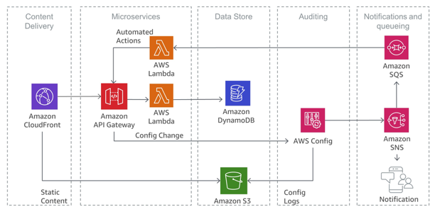
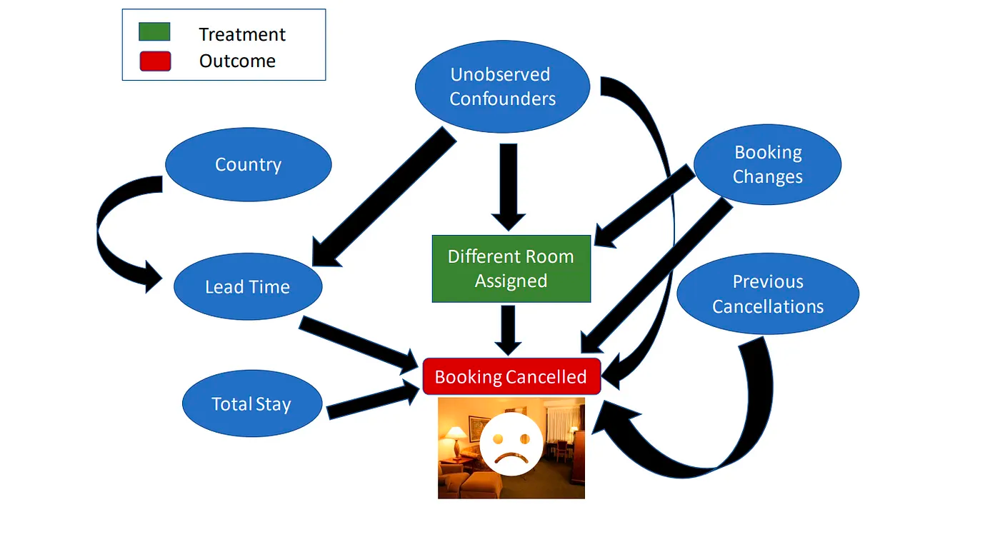

Modeling Causal Relations
Except for a couple of exceptions, in DoWhy, the first step to perform a causal task is to model causal relations in form of a causal graph. A causal graph models the causal relations, or “cause-effect-relationships” present in a system or problem domain. This serves to make each causal assumption explicit. Think e.g. altitude → temperature, i.e. higher altitude causes lower temperature. A causal graph is a directed acyclic graph (DAG) where an edge X→Y implies that X causes Y. Statistically, a causal graph encodes the conditional independence relations between variables.
In cases, where we do not know the causal graph, we can apply methods for learning causal structures from data. Section Learning Causal Structure from Data introduces statistical methods for this.
There are other ways to construct causal graphs too. Often, we can derive it, when systems already convey this kind of information. E.g. in a distributed system of microservices, we can use request tracing frameworks to reconstruct the graph of dependencies in that system. A causal graph is the reverse of that dependency graph.
{kind=link}
In other cases, we can consult domain experts to learn about the causal graph and construct it.
{kind=link}
Note that, depending on the causal task, this graph need not be complete. E.g. for Effect Estimation Using specific Effect Estimators (for ACE, mediation effect, …) you can provide a partial graph, representing prior knowledge about some of the variables. DoWhy automatically considers the rest of the variables as potential confounders.
In DoWhy, we can use the NetworkX library to create causal graphs. In the snippet below, we create a chain X→Y→Z:
>>> import networkx as nx
>>> causal_graph = nx.DiGraph([('X', 'Y'), ('Y', 'Z')])
Once we have the causal graph, the next steps are defined by what we want to do:
For effect estimation using specific effect estimators, this is all we need. The next step would be “identification” as explained in Effect Estimation Using specific Effect Estimators (for ACE, mediation effect, …).
For most other tasks, we will also have to assign so-called causal mechanisms to each node as we’ll show in the following section.
To diagnose a causal graph, check out Diagnosing a Causal Model.